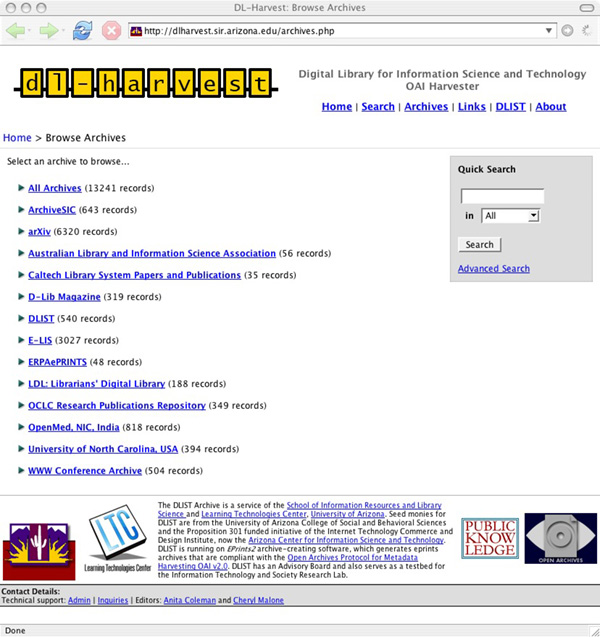
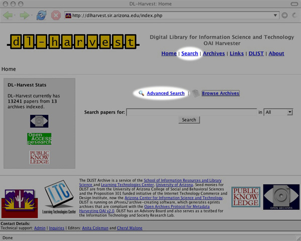
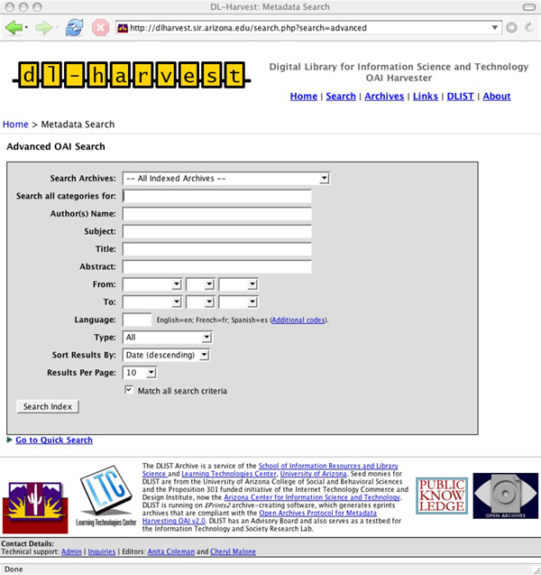

|
Abstract
Self-archiving, the practice of depositing one's works in an OAI-compliant archive, is a key strategy for innovating scholarly communication and achieving open access. DL-Harvest, a subject service for Library and Information (LIS), based on the aggregation of OAI-PMH compliant metadata from both institutional and disciplinary digital repositories, including dLIST, is described. Additionally, results from two studies that explored LIS journal publishers' stances towards self-archiving as expressed in copyright transfer agreements (CTAs) and the scholarly communication behaviors of LIS scholars, with regard to self-archiving and searching, are presented and some implications for the development of federated subject services are highlighted
Introduction
In 2002, approximately a year after release, Van de Sompel and Lagoze (2002) reported optimistically about the acceptance of the Open Archives Initiative-Protocol for Metadata Harvesting (OAI-PMH) as a foundation for digital library interoperability. Additionally, they highlighted the role of metadata, data providers and service providers as enabled by the OAI specification, and identified some of the services that could be built besides resource discovery: longevity and risk management, personalization, and current awareness.
Today, less than five years after the OAI-PMH release, the Open Archives Initiative (OAI) website has registered 328 data providers (i.e., open access archives or digital repositories) that comply with OAI-PMH (OAI, 2005). OAIster (2005), a digital union catalog and an end-user data service harvests 575 OAI-compliant repositories. While these numbers are striking, they don't reveal exactly how OAI-PMH is being used in "federating" institutional repositories "...a fruitful area for exploration and innovation" (Lynch, 2003).1 To do so, in this article we report our experiences as an OAI-PMH data provider of dLIST, the Digital Library of Information Science and Technology, an open access archive and a cross-institutional Eprints-based, digital repository for Library and Information Science (LIS). Issues for OAI-PMH service providers are explained using our development of DL-Harvest, a subject-based, open access aggregator and search engine for the information sciences, including LIS. We describe the modifications we made to the PKP Harvester software with regard to OAI-PMH flow control and sets, and the 13 OAI-compliant archives we currently aggregate, particularly in terms of new services that can be developed. Finally, we share the preliminary results of two studies. The first analyzed the copyright transfer agreements (CTAs) of LIS journals, and the second explored the self-archiving and scholarly communication behaviors of LIS Scholars. Findings from these studies, we hope, will help LIS scholars, decision-makers and leaders demarcate the differences between scholarly communication and publishing, and support the development of subject services that "create a much more open field for a widened circle of researchers." (Guedon, 2004, p. 325).
Open Access in Library and Information Science
Open access archiving, sometimes also referred to as self-archiving, and open access publishing through open access journals are two complementary ways to accomplish open access of the scholarly, refereed, research literature and other outputs of a field. For Harnad (2003), open access archives are the "green" and open access journals the "gold" roads to achieving open access of the refereed, research literature. According to Suber (2005), "Open-access (OA) literature is digital, online, free of charge, and free of most copyright and licensing restrictions." Open access to all the research outputs on a global scale is the goal of the OA movement (Harnad, (1995); BOAI, 2002), and many solutions to reach this goal exist (Hitchcock, 2003). Yet, in 2002 – although there were many experiments in open, electronic publishing – there were no open access archives for LIS.
Despite quick support and advocacy of the OA movement from the LIS community, open access to their own research outputs, except possibly in the area of digital libraries, remained to be accomplished. Considering that the majority of the Thomson-ISI ranked journals in the Information Science, Library Science category were closed,2 this was a significant gap. Hence, in June 2002 dLIST was established as a cross-institutional, disciplinary, open access archive to close the gap; scholars who were publishing in the closed journals now had an OAI-compliant venue for self-archiving. dLIST was also a response to findings that were percolating even as early as 2002, the hallmark year when institutional repositories began to be adopted as a strategy for OA (Lynch 2003, Crow, 2003). Not all institutions may be able to afford institutional repositories, scholars in general adhere to disciplines rather than institutions, all types of scholarly materials need to be open to foster a strong scholarly communication network, and there will continue to be a need for subject-based aggregation, federated searching, preservation, and other services (American OA Forum, 2003; Brogan, 2003; Guedon, 2004; Krichel, 1998; Lynch, 2003; Odlyzko, 2002). Specific reasons for establishing dLIST as a subject archive, include the following:
- The relatively small size and location of many academic LIS units, in the United States and globally, means that they may not be able to afford their own institutional repositories;
- The importance of connecting the LIS education, research and practice communities by means of a digital library that besides research materials had curriculum (syllabi) and practice (pathfinders, information literacy) materials3 was recognized;
- We sought to improve visibility and cumulate the disciplinary research record by providing a repository for preliminary research findings and supporting supplementary research materials such as bibliometric datasets and evaluation protocols; and
- We wished to work with professional, learned societies in the field to identify a sustainable business model for OA that positively affects LIS scholarly communication and maximizes economies of scale.
DL-Harvest, Aggregating Open Access LIS
DL-Harvest, a subject-based, open access aggregator and federated search service for LIS was established in May 2005. It is indexed by Google and Google Scholar, besides OAIster. Figures 1-3 are screenshots of DL-Harvest showing the archives harvested and the two types of searches (Quick/Basic and Advanced) that are available. As a service for the Information Sciences, DL-Harvest aggregates materials from selected repositories in Archival Science, Library and Information Science, Museum Informatics, and related subjects. Currently, metadata from 13 OAI-PMH data providers are gathered and offered with search services.
For the harvesting software, we considered Old Dominion's ARC which we had used in another experiment to integrate non-OAI, structured websites (Coleman et al., 2004). In the end we selected the Public Knowledge Project's Open Archives Metadata Harvester, henceforth referred to as PKP Harvester (2005). (Kellog, (2004) provides a list of eight OAI Metadata Harvesting Tools including a brief evaluation of the PKP Harvester and Virginia Tech Perl Harvester.) We selected PKP Harvester, despite its limitations, because of its ease of use and potential for scalability. It uses PHP, a standard web/database programming language, one that is easily integrated on the Apache Web Server under which Eprints runs along with the MySQL database and the Linux operating system4. PKP Harvester is also open source, which allows us to freely modify the PKP application software.
The official PKP Harvester does not implement all of the OAI protocol; that is, it supports neither OAI flow control5 nor OAI sets6. To address this, we developed two software code patches for flow control and sets. Without flow control, it is impossible to harvest from archives like arXiv, and without sets, we would have to harvest all of arXiv's 100,000+ articles. We run DL-Harvest with these two patches, and the patches have also been submitted for inclusion in the next release of the PKP Harvester. In the meantime, our patches are available at dLIST7 and are being used in new services8. Additionally, the PKP Harvester offers little or no logging support, although standard UNIX logging can be integrated. This makes it difficult to diagnose problems with archives during harvesting; for example, answers are ambiguous to questions such as: Are the archives down, or are there just no new items?
LIS Archives in DL-Harvest
The 13 archives in DL-Harvest are: @rchiveSIC, ArXiv, Australian National Library Association (ALIA), CalTech Library Systems Papers and Publications (Cal-Tech), D-Lib Magazine, E-LIS, Librarians Digital Library (LDL), OCLC Research Publications Repository, University of North Carolina-Chapel Hill, School of Information and Library Science Electronic Theses & Dissertations, and the WWW Conference Archive. Table 1 provides a quick overview of the type of repository, the software used, the coverage in terms of years and language, alerting service availability, and repository size. The policies of most of the archives with regard to metadata, collection, storage formats, preservation, user privacy, audience, services, and coverage in terms of language, types, subject, etc. are not readily discernible, which provides an area for collaboration, cooperation, and coordination as OAI data providers proliferate. The subject schemes used are diverse, and Table 2 summarizes the major types of self-developed subject schemes in the 13 archives.
Table 1: Characteristics of DL-Harvest Archives
| Name of Archive (and type of repository, subject focus) |
Software Used |
Coverage & Services |
Total Number of items |
Number of Full-Texts/Items in English in Multi-lingual Repositories** |
| |
|
Language |
Dates |
Alerts |
|
|
@rchiveSIC
(Cross-institutional, inter-disciplinary) |
Eprints |
French, English |
1993 - |
Yes |
627 |
35 |
AxXiv
(Computing only, Cross-institutional, disciplinary, physics) |
Prop. |
English |
1993 - |
Yes |
6158 |
- |
ALIA
(Cross-institutional, disciplinary) |
Eprints |
English |
2000 - |
No |
22 |
- |
CalTech
(Institutional, academic unit is the library) |
Eprints |
English |
1999 - |
No |
35 |
- |
D-Lib Magazine
(Open access journal) |
Prop. |
English |
1995 - |
Yes |
319 |
- |
DLIST
(Cross-institutional, inter-disciplinary information sciences) |
Eprints |
English |
1987 - |
Yes |
499 |
- |
E-LIS
(Cross-institutional, disciplinary, LIS) |
Eprints |
Spanish, French, Italian, Portuguese |
1965 - |
Yes |
2949 |
781 |
ERPAePRINTS
(Project-based, cross-institutional, digital preservation) |
Eprints |
English, Italian, etc. |
1995 - |
No |
48 |
47 |
LDL
(Institutional, academic unit is LIS) |
DSpace |
English |
1999 - |
Yes |
188 |
- |
OCLC
(Institutional unit is the research dept.) |
Eprints |
English |
1979 - |
No |
349 |
- |
OpenMed
(Cross-institutional, disciplinary, medical sciences) |
Eprints |
English |
1952 - |
No |
749 |
- |
UNC-SILS ETD
(Institutional, academic unit is LIS) |
DSpace |
English |
2004 - |
No |
368 |
- |
WWW Conference Archive
(Conference papers from a single conference) |
Eprints |
English |
2001 - |
No |
504 |
- |
**These numbers are based on DL-Harvest as of 1 November 2005.
Table 2. Archives and their subject schemes
| Type of Subject Schemes |
Name of Archive |
| Flat list (number of subjects vary from 22 to 60) |
@rchiveSIC, ALIA, dLIST |
| Hierarchical scheme (two tier) |
AxXiv, CalTech, E-LIS, ERPAePRINTS, OpenMed, WWW |
| Communities and Collections |
LDL, UNC-SILS ETD |
Searching and Other Services in DL-Harvest
There are two search options in DL-Harvest:
- A Quick Search across all archives in all or specific fields such as Author, Title, and Abstract.
- An Advanced Search, which allows several fielded searching by Archive, Author, Subject, Date ranges, or Language.
The search is a full-text search on the metadata in the database9 and matches other non-text fields on a one-to-one basis. DL-Harvest is using the PKP search software, but PKP-out-of-the-box was not only simple, some search functions did not work. We upgraded our MySQL to use a newer version 4.1.x, added SQL query optimizations (some MySQL4 specific) to our search interface, and modified the PKP search software by completely rewriting the code for the Advanced Search. Our modifications improve the search services and allow for greater performance when the number of archives increases. At a low number of archives, say <50,000, these optimizations don't affect the user's perception of the search.
Liu et al. (2001) note, "The effort of maintaining a quality federation service is highly dependent on the quality of the data providers." They mention four problems:
- Data provider and metadata quality. Not all data providers follow the OAI-PMH protocol and thus some provide accurate metadata, but there are others who don't provide any metadata or incomplete metadata.
- Update frequency, push model, and security. Too many harvests might burden the data provider while too few means the service provider's data may be stale.
- Availability of data providers.
- The need for controlled vocabularies for cross-archive subject searches.
We note a fifth problem: the way sets are described may be a limitation of the OAI-PMH protocol for setting up subject services and Tennant (n.d) has also documented these and others.
Sets are defined by the OAI archive or data provider not by the harvester software of the service provider. This limits the selection that harvesters have when harvesting. (One advantage to this, or any other OAI defined filter, is that the data transfer and harvester processing time are reduced, because the archive does not return unwanted data.). One way to get around this problem is for the harvester to implement its own filters. Basically, the harvester could implement search criteria (after harvesting) and filter out metadata that either match or don't match specified criteria. A simple example would be to filter out metadata that doesn't match a certain subject. Similarly, if one didn't want metadata created/modified before January 1, 1990, a filter could simply look at the date field in the metadata and ignore metadata before 1990. The drawback (but possibly also an advantage) with this approach is that each harvester could implement the filtering in its own way, instead of combining all efforts into improving it in the OAI protocol. We have experimented with sets for one archive – namely, the well-known arXiv for not only physics but also computer science and including the digital libraries and information retrieval communities. DL-Harvest only harvests the Computer Science set from this archive, making available approximately 6,158 metadata records for searching. We hope to refine harvesting of arXiv even further and harvest only specific subjects such as Digital Libraries, Human-Computer Interaction, and Information Retrieval. For now, the DL-Harvest Advanced Search subject filter limits for these subjects at time of searching.
Using examples from DL-Harvest searches, limitations of data provided, and new subject services that are needed for globally inclusive scholarly communication networks, are described in terms of language, dates, subjects, authors, and resource types.
Language
DL-Harvest indexes three archives that allow materials in languages other than English: @rchiveSIC, E-LIS, and ERPAePRINTS. 8,978 of the 12,815 items now in DL-Harvest are in English; this means that about 4,000 materials are in other languages. In DL-Harvest, these other language materials can be retrieved using Advanced Search and limiting by language for All Archives or in individual archives. Example: In Advanced Search, selecting @rchiveSIC, and entering the code "en" in the Language field, and leaving all other fields empty will retrieve 35 records (all in English) out of the total of 626. A similar search in E-LIS retrieves 781 English language works from the total of 2,949. Data providers can improve their search capabilities by offering language filters, but neither @rchiveSIC nor E-LIS currently offer them. This is another reason for scholars-as-readers to use a subject-based service like DL-Harvest. A service for either DL-Harvest or the individual data providers to explore is the provision of English versions of summaries and references, at the very least, if not the full-text of the entire document itself. Translations improve accessibility to open access materials in other languages.
Dates
The DL-Harvest metadata record date for the title, "Activity-based classification of university actors for the construction of a domain-oriented data warehouse" from @rchiveSIC displays as 2006-07-2710. Currently, it is unclear from the record display whether this is date of publication or something else, though further investigation shows that this is the publication date. The metadata record display needs improvement, but it is not always clear that all data providers are using the date field consistently. Another scenario can be seen in the metadata from D-Lib Magazine and OCLC Research Publications Repository. Dates for all titles in these archives display as December 31, 196911 because the archive (data provider) returns a NULL date for these two sources, and hence this field defaults to the lowest date allowed in the MySQL datetime field, 12.31.1969. This is another type of data that needs to be cleaned.
Subject, Discipline, Topic
Each archive uses a different scheme for subjects. Also, 10 of the 13 archives (exceptions are dLIST, LDL, and WWW Conference Archive) use subject and discipline metadata. Sometimes other fields with subject metadata are also present: Keywords and Approach. Finally, the subject fields are not used consistently in the archives. For example, in arXiv the phrase "digital libraries" is both a subject and a discipline12. The lack of a shared controlled vocabulary across repositories means that service providers and data providers need to collaborate. More experimentation is needed with regard to automatic and human-mediated metadata generation and enhancement, and full-text indexing in these contexts.
Names
A Quick Search for "Marchionini" in All, retrieves 27 records; picking the name up in both the author and contributor metadata fields. A Quick Search of "Marchionini" as an Author search retrieves only two records. As the archives grow, distinguishing between author roles, name searching and disambiguation will become important. Names can also be included as part of an alerting service to notify users of additions; for example, we are currently experimenting with RSS feeds by subject for DL-Harvest and dLIST13. Users can use web browsers, such as Mozilla Firefox and Apple Safari, standalone RSS feed readers or those embedded in mail clients like Thunderbird, and become notified of new materials submitted to dLIST by reading the feeds that include links to the original item. Currently, the dLIST RSS feed notifies users of all additions; there's no facility for receiving only RSS feeds when materials in selected subjects of interest are added or specific scholars deposit. Similarly, RSS-enabled feeds for DL-Harvest by subject, author names, and user-specified searches are added-value services.
Types
Most LIS data currently tends to be text based formats (HTML, PDF). However, datasets (spreadsheet data) and other types of data and information objects such as multimedia files are finding their way into the archives improving the scope for the development of services based on resource types besides traditional bibliographic management (reference lists) and alerts, such as re-use, storage and preservation, search services for multimedia, and annotation/commentary. Adding communication tools to facilitate discussions of deposits, processing tools to manipulate specific types of resources self-archived, visualization and certification (online peer review processes for improving quality, increasing trust and reducing information overload) are value-added services. These have great potential for changing scholarly communication and enabling new forms of scholarship.

Figure 1: DL-Harvest and the list of 13 archives currently being harvested.

Figure 2: Simple search screen in DL-Harvest; there is also an Advanced Search option as the spotlight shows.

Figure 3: Advanced Search Screen - showing all fields - in DL-Harvest.
The Practice of Self-Archiving in LIS
As we continue to develop dLIST as a cross-institutional repository for self-archiving and DL-Harvest, as a subject service, the practices of the communities we serve are also of great interest. Two studies, the dLIST Copyright Transfer Agreements (CTAs) analysis and the dLIST Scholarly Communication survey were undertaken in order to understand LIS publishers' stances as expressed in journal copyrights and the behaviors of LIS scholars as authors and readers.
What are the self-archiving policies reflected in the CTAs of LIS journals? Harnad (2005) has persuasively argued against analyzing journal copyright policies in great detail. However, for LIS, the copyright barrier faced by authors must be examined in detail because our field is not just limited to scholarship in a particular subject; many are devoted to research about scholarly communication itself and being informed about the nuances of self-archiving is important for the subsequent health of the discipline. The self-archiving definition is not quite as cut and dried as we think and this has implications for building research communities and improving individual and field impact through economies of scale. Swan's study (2005) for example included definitions that ranged from the deposit of only scholarly works on a personal website to deposit in
OAI-compliant archives.
We defined self-archiving quite rigorously as the "practice of depositing digital copies of papers or other scholarly works in an OAI-compliant repository." The RoMEO/SHERPA classification of publishers by color based on their support of self-archiving (Gadd et al., 2003) was modified in our data analysis to reflect both which version of a paper could be self-archived and where it could be self-archived. A dLIST CTA directory showing the CTA location and interpreting the self-archiving stance is available for testing14. Figures 4-5 are sample entries from the directory for two journals: Information Research and Information Systems Journal, and a brief summary of what we found follows:
- Of the 52 English-language, Thomson-Scientific ranked journals (Social Science Citation Index, Information Science, Library Science category), only two are open access journals: Journal of the Medical Library Association and Information Research.
- Even journals that allow self-archiving of postprints (see the case of the entry shown in Figure 5) can be ambiguous or contradictory, leading the poor author to give up on the notion of depositing anything other than a preprint anywhere other than his website!
- To add to the complexity, publishers use different names for the CTA: Author or Publisher Agreement, Copyright Agreement, Journal Article Record (Emerald), Transfer of Copyright Agreement (Elsevier, Taylor & Francis), License (ALA). More importantly, it became impossible to limit the analysis to the CTAs since many of them reference other documents. For example, Journal of Documentation references the Author's Charter. Again, Figure 5 shows the presence of a separate self-archiving page.
- Many LIS journals do not have a CTA available on the Web.
- CTA analysis is a moving target; many journals changed policies even as we were carrying out the study, making data reported as recently as August 2005 no longer valid a few months later; for example, in November College & Research Libraries became an open access journal with a 6-month embargo period and permits the immediate self-archiving of preprints and postprints.
| Figure 4: Sample entry for an ISI-ranked open access journal |
| Journal URL: |
http://informationr.net/ir/ |
| Subject: |
Library and Information Science |
| Type: |
In ISI JCR, in ISI-SSCI, In DOAJ |
| Publisher: |
Lund University Libraries and University of Sheffield, Dept. of Information Studies |
| Publisher URL: |
http://www.lub.lu.se/new_top/omlub/bd_eng.html |
| CTA URL: |
http://creativecommons.org/licenses/by-nd-nc/1.0/ |
| Date: |
02/25/2005 |
| Last Update: |
11/09/2005 |
| Special Notes: |
"You are free: to copy, distribute, display, and perform the work Under the following conditions: Attribution. You must attribute the work in the manner specified by the author or licensor. No Derivative Works. You may not alter, transform, or build upon this work. Noncommercial. You may not use this work for commercial purposes. For any reuse or distribution, you must make clear to others the license terms of this work. Any of these conditions can be waived if you get permission from the copyright holder. Your fair use and other rights are in no way affected by the above." |
Self-Archiving
Status: |
Author can archive in open access archives. Author can archive pre-print and post-print |
| Notes: |
Authors retain copyright. A Creative Commons License (attribution, no derivatives, non-commercial, share-alike) is used. |
| Figure 5: Sample entry for a journal that allows self-archiving of pre and post prints in open access archives; see contradiction in Notes. |
| Journal Name: |
Information Systems Journal |
| Journal URL: |
http://disc.brunel.ac.uk/isj/ |
| Subject: |
Library and Information Science |
| Type: |
In ISI JCR, in ISI-SSCI |
| Publisher: |
Blackwell Publishing |
| Publisher URL: |
http://www.blackwellpublishing.com/ |
| CTA URL: |
http://www.blackwellpublishing.com/pdf/isj_caf.pdf |
| Date: |
02/25/2005 |
| Last Update: |
11/09/2005 |
| Special Notes: |
"In addition to the rights stated above the author shall retain the following rights: The right, after publication by Blackwell Publishing, to use all or part of the Article and abstract, without revision or modification, in personal compilations or other publications of the author's own works, and to make copies of all or part of such materials for the author's use for lecture or classroom . . . (b) Prior to publication, the author may share with colleagues print or electronic 'preprints' of the unpublished Article, in form and content as accepted by Blackwell Publishing for publication in the Journal. Such preprints may be posted as electronic files on the author's own website for personal or professional use, or on the author's internal university, college or corporate networks/intranet, or secure external website at the author's institution, but not for commercial sale or for any systematic external distribution by a third party (e.g. a listserve or database connected to a public access server). Prior to publication, the author must include the following notice on the preprint. . . . The preprint can be replaced with the published version of the Article. Posting of the published Article on any other electronic public server can only be done with written permission from Blackwell Publishing." |
Self-Archiving
Status: |
Ambiguous classification. Author can archive in open access archives. Author can archive pre-print and post-print |
| Notes: |
Blackwell has a separate self-archiving page on its website which contradicts condition (b) above - http://www.blackwellpublishing.com/static/selfarchive.asp. According to it, 1) Authors are allowed to self-archive preprints and postprints in OAA but 2) postprints may have an embargo period depending on journal. The CTA for ISJ mentions no embargo period. |
Our analysis of the ISI-ranked LIS journals shows that irrespective of the type of publisher (learned societies, university presses, or commercial), many do not make their self-archiving stance unambiguously visible. Annual Review of Information Science and Technology, Canadian Journal of Library and Information Science, Libraries & Culture, and Library Quarterly, are only a few of the professional society and university press journals that make no statement endorsing self-archiving, nor is a CTA publicly available for any of them. Journal of the American Society for Information Science & Technology (published by Wiley for ASIS&T) prohibits "systematic external distribution" but what exactly this means is called into question by the CTAs of other publishers. On the other hand, commercially produced journals like Journal of Documentation (Emerald Publishing Group), Information Systems Journal (Blackwell), and Serials Review (Elsevier) appear to announce their self-archiving policies publicly – albeit ambiguously. Elsevier journals still don't make their CTA publicly available but Elsevier has a Copyright Policy document web document; Blackwell's Information Systems Journal, as we saw in Figure 5, has contradictory elements. Journals published by Emerald appear to prohibit self-archiving in open access archives at first glance of the CTA, but a reading of related documents like Emerald's Author's Charter reveals that self-archiving is permitted. Leadership from major professional associations in the US and Canada, such as the American Library Association, American Society for Information Science & Technology and Canadian Association for Information Science, has been slow. The Medical Library Association, on the other hand, signaled early and clearly; their journal went open in 2001/2002, and all back issues are openly available from 1911 onwards. The majority of LIS journals, we speculate, are not averse to self-archiving although LIS scholars, in general, don't appear to be aware of this, and how much LIS scholars-as-authors can self-archive in an OAI-compliant archive is still not crystal clear. Whether all LIS scholars hold the same definition of self-archiving as we do, how much they self-archive, and their strategies for locating content in open archives are questions the 2005 dLIST survey on self-archiving and scholarly communication in LIS sought to understand.
The online survey of the scholarly communication behaviors of LIS scholars focused on self-archiving, and the instrument was adapted from Swan and Brown (2005). The complete instrument, showing all the questions in the survey, has been self-archived in dLIST (Coleman, 2005), and we report only a few relevant, preliminary findings here.
Two hundred forty-four usable responses were received. Ninety-nine of the 244 respondents were faculty in LIS schools. One hundred thirty-one defined self-archiving, but only 3 (n=131) corroborated ours by mentioning deposit in an OAI-compliant archive as their definition of self-archiving. While 55.1% (70 of n=127) said they self-archive, only 17 (n=72) admitted they self-archive in dLIST. Where do the rest self-archive? The majority, 27 (n=40), deposit their papers on their personal website, shared-network drive, or laptop, 9 self-archive in institutional repositories, 3 self-archive in E-LIS, and 1 self-archives in Social Science Research Network. Twenty-four (n=55) were unaware of the possibility of providing open access through self-archiving. Reasons for not self-archiving ranged from lack of time, lack of acceptance ("most of the scholars cite paid articles from paid journals only"), lack of institutional support, and lack of integration with workflow tools like "Google", as well as concerns about copyright and peer review. A few candidly admitted, "don't know how." Another wrote: "I feel guilty not using dLIST. Find a way to make it easier and I'll participate." Many revealed understanding and support of dLIST goals to connect LIS research, education and practice communities through a disciplinary service for all types of scholarly work: "I like how any type of work can be archived...journal articles, teaching materials..."; "mention D-LIST as a self-archiving option, esp. for those with no institutional repository, very frequently."
Eleven respondents use DL-Harvest to search for content in open access archives (n=106) and, not surprisingly, the majority, 84, used Google Scholar. Finally, respondents had more questions than answers, as this quote from a single participant shows: "How can I do it? What is it? Where can I get it done? Will I have versioning control? Do I lose control of the article after I post it? How do I update as information changes? How do people who are using the archive know that something has been updated on an article they have read in the past? How can I create connections between my articles, or between my articles and other people's articles? What kind of visualizations and search interfaces are used to get people to my articles? How are they abstracted? Can I write my own dLIST specific abstract for display/browsing purposes? Who uses dLIST? Why would anyone bother? Am I wasting my time by putting my article there? How integrated with other services is dLIST? Is it indexed by Google and other search engines? If not, why not? Are there other ways I can access articles in dLIST without disrupting my workflow by going to dLIST's webpage or whatever interface exists? How does it work? How is an article's relevancy to a particular search evaluated? How are search results returned?"
Conclusion
Clearly there is a great deal of work to be done – more educational or advocacy than technical – if federated OAI-compliant archives and services are to achieve the economies of scale that OCLC did for cataloging, or that stimulate the sort of innovations that ISI citation indexes enabled. Despite comments such as "dLIST is a wonderful espace" and "DL-Harvest is a much needed subject service", the low rate of actual self-archiving raises the question of the value of dLIST and DL-Harvest. How much access to the closed literature are they providing, and what new forms of scholarship or innovation are they facilitating?.
Besides sparking innovation and economies of scale subject aggregation and subsequent federation has the potential to bridge islands of disparities – in this case, the many research communities and their collections that can be gathered under an LIS umbrella. But how close to this are we? The preceding discussion has implicitly assumed that data and service providers have niche roles; data providers offer self-archiving in an OAI-compliant repository. They build communities and may experiment to offer simpler deposit and metadata interfaces, as well as facilitate bulk-imports to make self-archiving easier for users. Far-sighted data providers may also link to services such as DL-Harvest and improve their individual institutional repository visibility and accessibility. Translations, current awareness alerts, certification (peer review, trust), and reports of usage (downloading) and impact (citing services) may contribute to shared developments with service providers. Service providers may build yet more federated and customized services. However, this might not happen. Uncoordinated institutional repositories in LIS may inhibit collaborative development and scholarly use of non-commercial OA subject services; roles may become blurred. Scholars and professional associations in LIS should think strategically about the development of repositories and subject federated services, because doing so may also improve public perceptions and funding for the field (Armbruster, 2005).
Acknowledgements
Thanks to Richard Hill and Carol Tenopir for insightful comments on an early draft. Thanks, also, to everyone who completed the dLIST 2005 survey and especially those who self-archive in OAI repositories. Attempts to build the LIS intellectual commons will be successful because of pioneers and innovators like you. Funding for dLIST is from the University of Arizona (Tucson), Prop 301 initiative.
Notes
1 Other novel uses of OAI-PMH are described by Van de Sompel, Young and Hickey (2003).
2 One of the Thomson-ISI ranked journals (http://scientific.thomson.com/, Journal of the Medical Library Association, became open access in 2001/2002 (Plutchak, 2005). Back issues, 1911 on, are openly available through PubMed.
3 This does not mean that all the different materials must be in the collection or even use the same repository software; we envisioned working with communities on an as-needed basis.
4 As Kellog (2004) notes, the LAMP (Linux, Apache, MySQL, PHP) is the chosen platform for some of the largest web services: Amazon, Paypal, Slashdot, and Google.
5 <http://www.openarchives.org/OAI/openarchivesprotocol.html#FlowControl>
6 <http://www.openarchives.org/OAI/openarchivesprotocol.html#ListSets>
7 <http://dlist.sir.arizona.edu/downloads.html>
8 DAEDALUS, a scholarly communication project at the University of Glasgow Library, <http://www.lib.gla.ac.uk/daedalus/> and Collib, a Master's LIS project in Norway, <http://collib.info/>.
9 <http://dev.mysql.com/doc/internals/en/full-text-search.html>
10 URL: <http://dlharvest.sir.arizona.edu/viewrecord.php?id=19732>
11 URL: <http://dlharvest.sir.arizona.edu/archives.php?id=18> and URL: <http://dlharvest.sir.arizona.edu/archives.php?id=14>
12 URL: <http://dlharvest.sir.arizona.edu/viewrecord.php?id=19102> and URL: <http://dlharvest.sir.arizona.edu/viewrecord.php?id=18532>.
13 Kristin Eschenfelder (University of Wisconsin at Madison) suggested the subject RSS alerting service.
14 <http://dLIST.sir.arizona.edu/cta>
References
American Scientist Open Access Forum. (2003). Discussion thread title: Cliff Lynch on Institutional Archives. URL: <http://www.ecs.soton.ac.uk/~harnad/Hypermail/Amsci/2744.html>.
Armbruster, C. (2005). Open access in social and cultural science: Innovative moves to enhance inclusion and impact in scholarly communication. November 15. URL: <http://ssrn.com/abstract=849305>.
BOAI. (2002). Budapest Open Access Initiative. URL: <http://www.soros.org/openaccess/>.
Brogan, Martha L. (2003). A Survey of Digital Library Aggregation Services. Washington D.C.: Digital Library Federation. URL: <http://www.diglib.org/pubs/brogan/brogan2003.pdf>.
Coleman, A., Bracke, P., and Karthik, S. (2004). Integration of Non-OAI resources for federated searching in dLIST, an Eprints repository. D-Lib Magazine, 10 (7/8): July/August. <doi:10.1045/july2004-coleman>.
Coleman, A. (2005). dLIST 2005 Survey - Self-Archiving and Scholarly Communication Behaviors in LIS - Instrument. URL: <http://dLIST.sir.arizona.edu/1000/>.
Crow, Raym. (2003). The Case for Institutional Repositories: A SPARC Position Paper. URL: <http://www.arl.org/sparc/IR/ir.html>.
Eprints. URL: <http://eprints.org/>.
Gadd, Elizabeth, Oppenheim, C., and Probets, S. (2003). The Intellectual Property Rights Issues Facing Self-archiving: Key Findings of the RoMEO Project. D-Lib Magazine 9(9). <doi:10.1045/september2003-gadd>.
Google. URL: <http://www.google.com/>.
Google Scholar. URL: <http://scholar.google.com/>.
Guedon, J. C. (2004). The "Green" and "Gold" Roads to Open Access: The Case for Mixing and Matching. Serials Review 30 (4): 315-328.
Harnad, Stevan (2005) Fast-Forward on the Green Road to Open Access: The Case Against Mixing Up Green and Gold. Ariadne 42. URL: <http://eprints.ecs.soton.ac.uk/10675/>.
Harnad, Stevan. (2003) The Green and Gold Roads to Open Access. URL: <http://www.ecs.soton.ac.uk/~harnad/Hypermail/Amsci/3148.html>.
Harnad, Stevan (1995) A Subversive Proposal. In: Ann Okerson & James O'Donnell (Eds.) Scholarly Journals at the Crossroads; A Subversive Proposal for Electronic Publishing. Washington, DC., Association of Research Libraries, June 1995. URL: <http://www.arl.org/scomm/subversive/toc.html>.
Hitchcock, S. (2003). Metalist of Open Access Archives: The Genesis of Institutional Archives and Independent Services. ARL Bimonthly Report 227. URL: <http://www.arl.org/newsltr/227/metalist.html>.
Kellog, David. (2004). Open source OAI metadata harvesting tools. URL: <http://www.diglib.org/aquifer/oct2504/harvesting.pdf>.
Krichel, Thomas. (1998). Access to scientific literature on the WWW: the RePEC concept. URL: <http://openlib.org/home/krichel/osborne.html>.
Liu, X, Maly, K, Zubair, M, and Nelson, M. 2001. Arc - An OAI Service
Provider for Digital Library Federation. D-Lib Magazine 7 (4): April.
doi:10.1045/april2001-liu>.
Lynch, Clifford. (2003). Institutional Repositories: Essential infrastructure for scholarship in the digital age. ARL Bimonthly Report 226: February. URL: <http://www.arl.org/newsltr/226/ir.html>.
MySQL. URL: <http://dev.mysql.com/>.
MySQL Search. URL: <http://dev.mysql.com/doc/internals/en/full-text-search.html>.
OAI, 2005. Registered data providers. URL: <http://www.openarchives.org/Register/BrowseSites>.
OAIster, 2005. OAIster Home. URL: <http://oaister.umdl.umich.edu/o/oaister/>.
Odlyzko, A. (2002). The Rapid Evolution of Scholarly Communication. Learned Publishing (15): 7-19.
PHP. URL: <http://www.php.net/>.
Plutchak, Scott. (2005). The Impact of Open Access. J Med Libr Assoc. 2005 October; 93(4): 419Ð421. URL: <http://www.pubmedcentral.nih.gov/articlerender.fcgi?artid=1250314>.
Public Knowledge Project Open Archives Metadata Harvester. (2005). URL: <http://pkp.sfu.ca/harvester/>.
Suber, Peter. (2005). Open Access Overview. URL: <http://www.earlham.edu/~peters/fos/overview.htm>.
Swan, Alma, and Brown, S. (2005). Open access self-archiving: an author study. Technical Report. UK: JISC. URL: http://eprints.ecs.soton.ac.uk/10999/.
Tennant, Roy. (n.d.). Bitter Harvest: Problems and Suggested Solutions for OAI-PMH Data and Service Providers. URL: <http://www.cdlib.org/inside/projects/harvesting/bitter_harvest.html>.
Van de Sompel, Herbert and Lagoze, Carl. (2002). Notes from the Interoperability Front: A Progress Report from the Open Archives Initiative. ECDL 2002: 144-157. (The submitted draft is also available at: <http://public.lanl.gov/herbertv/papers/ecdl-submitted-draft.pdf>).
Van de Sompel, Herbert, Young, Jeff and Hickey, Thomas. (2003) Using the OAI-PMH differently. D-Lib Magazine 9(7-8). <doi:10.1045/july2003-young>.
Copyright © 2005
Anita Coleman, and Joseph Roback
(The spelling of the name Thomson was corrected in all places in the article from Thompson to the correct spelling of Thomson.)
|